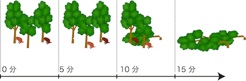

2匹のビーバーが歯でかじって3本の木を倒（たお）そうそうとしています。 1匹のビーバーが1本の木を倒（たお）すのに10分かかります。 おたがいの歯でケガをするといけないので，2匹で同時に同じ木をかじることはできません。 ただし，同時にかじるのでなければ，１本の木を２匹で交代しながらかじることもできます。
2匹のビーバーが協力して3本の木を倒（たお）すのにかかるもっとも短い時間は何分でしょうか？
